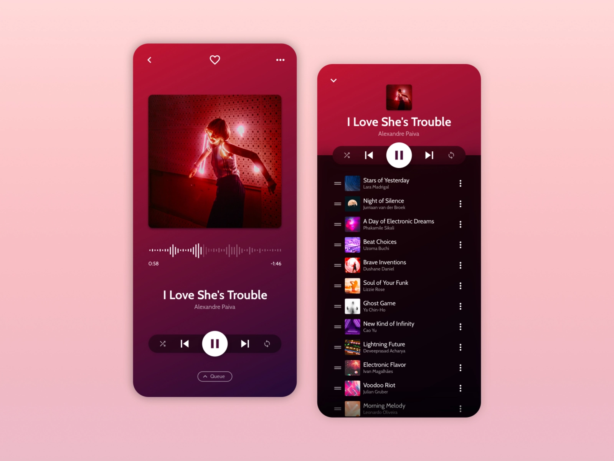
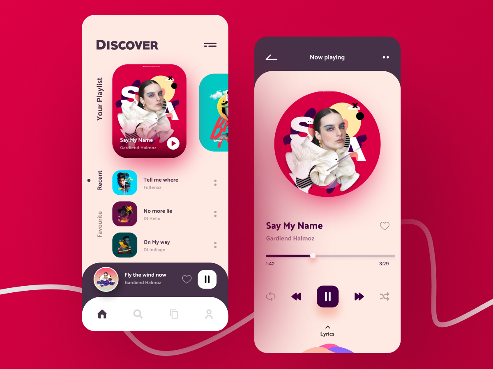
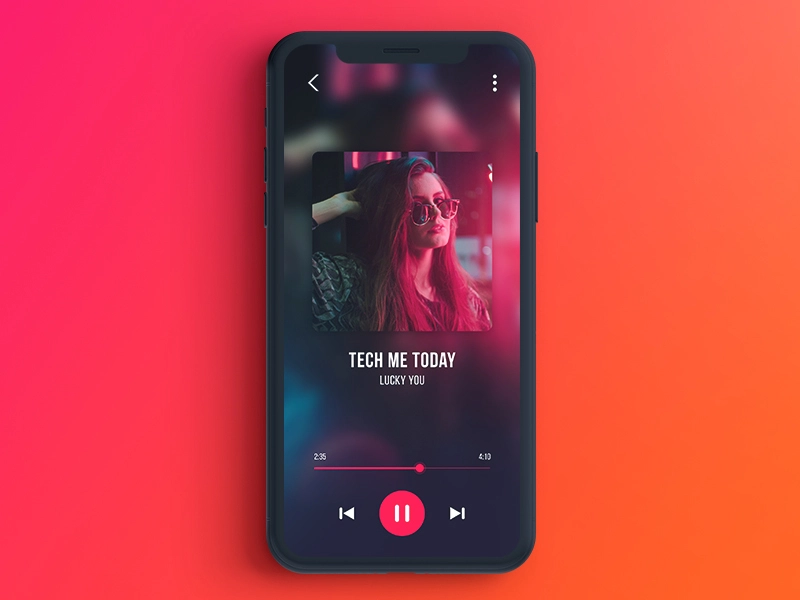
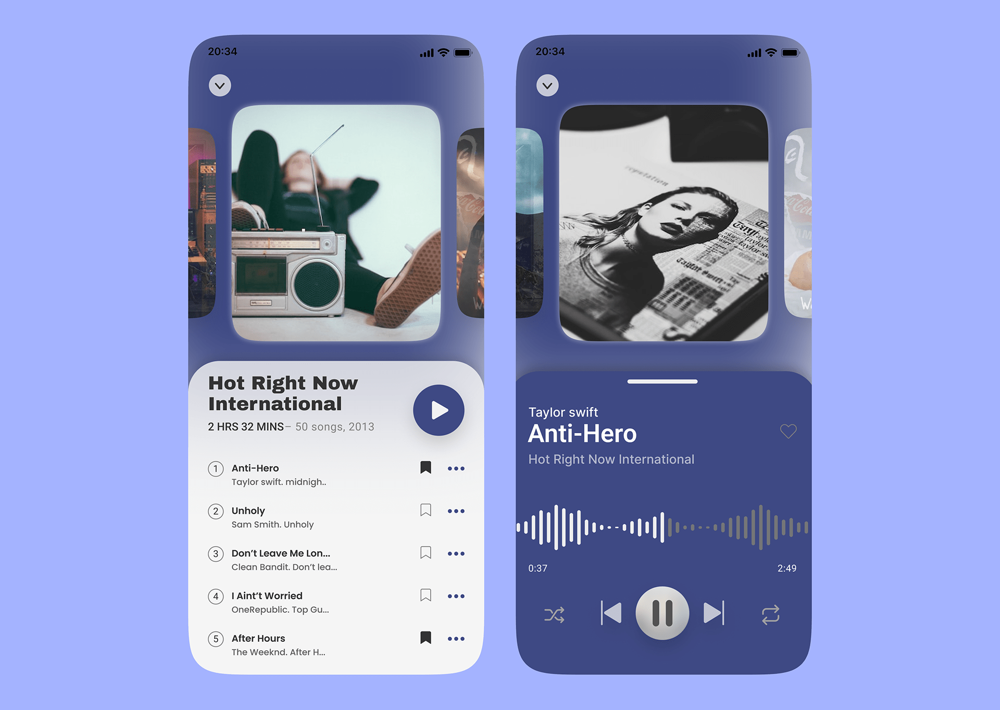

On this page
Music Player
This one is really going to help you wrap your head around lists.
Imagine you’ve just joined a brand new start up called Bop. It’s a new music streaming service aimed to rival Spotify’s expensive premium price tag.
Imagine a new user is out for a jog and they bump into an old friend. They want to hit the pause button on the app to stop and have a chat with their friend. What do they see when they look down?
Create a UI which allows a user to pause and play audio on the application.

Source: https://dribbble.com/adommeti
Potential Inclusions
- Track List
- Media Playback
- Sound wave Bar
- Artist Thumbnail
- Track Details
- Upcoming Track
- Playlist
Inspiration

Source: https://www.uplabs.com/posts/music-player-app-ui-design-concept

Source: https://dribbble.com/rayhansumon

Source: https://www.behance.net/mitaliw?tracking_source=search_projects|Music+Player